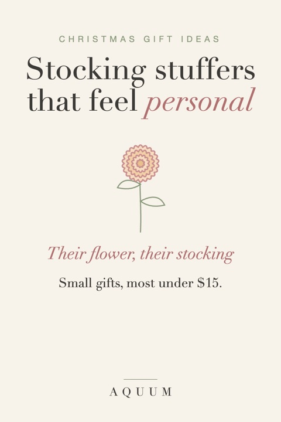

Stocking Stuffer Ideas That Feel Personal (Most Under $15)
2026-10-04
Written by the team behind Aquum, a small birth flower gift shop. How we make money.

Stocking stuffers are where Christmas gets generic: lip balm, socks, a chocolate orange, the same for everyone. The fix is small and cheap: give each person something with their own birth flower. It costs the same, and it says "I thought about you" instead of "I bought a multipack".
Not sure of someone's flower? The birth flower finder tells you from a birthday, and birth flowers by month has all twelve.
Free (just print them)
- A bookmark with their flower. Our free birth flower bookmarks are ready to print and cut; laminate them if you can.
- Stickers. Our free birth flower stickers print on sticker paper: perfect for kids and for anyone who journals.
- A coloring page of their flower. Our free Christmas coloring pages have a Christmas page for each month. Roll it up with a ribbon and a few colored pencils.
- A gift tag that's a gift. Use our Christmas gift tags, each with a flower and its meaning, on the stocking itself.
Under $15
- Seed packets of their flower. Marigold, cosmos, larkspur, aster and sweet pea seeds are easy to find and cost a few dollars. Add a note: "Plant these in spring. They're yours."
- A small pressed-flower item: a keychain, a phone grip or a hair clip with a flower from their month.
- Hand cream or soap in their flower's scent: rose (June), lily of the valley (May), violet (February), sweet pea (April).
- Socks or a scrunchie with a floral print in their flower's color. See birth flower color meanings for which colors say what.
- A pin or enamel badge with their flower, for a jacket or a bag.
Under $30 (for the stocking that matters most)
- A birth flower necklace or ring. Small, fits in the toe of the stocking, and gets worn every day.
- A mug or a small print with their flower and its meaning. Pair it with a card that explains why you chose it.
- An embroidery kit. Our free embroidery patterns have every flower; add a hoop, a piece of linen and the thread colors listed.
For kids
- Their flower to color, from the free coloring pages, with a small box of crayons.
- Stickers of the whole family's flowers, so they can find everyone's.
- A packet of seeds and a tiny pot. Kids love having "their" flower to grow.
The note that makes it
Whatever you put in the stocking, add one line on a tag: their flower and what it means. "Marigold, your flower: warmth that stays. That's you." It turns a $5 gift into the one they keep. For more wording, see what to write in a Christmas card.
Looking for the main gift? See meaningful Christmas gifts for her, gifts for him and birth flower Christmas gifts.